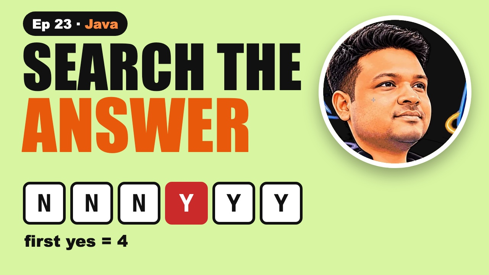

Binary Search on Answer in Java: Koko, Books, Cows

The video goes live on 29 Nov 2026 at 6:00 PM IST. The notes are ready now.
?What this episode covers
Some of the hardest binary search problems have no sorted array at all. Koko has piles of 3, 6, 7 and 11 bananas and 8 hours. What's the slowest eating speed that still finishes?
Line up every possible speed and ask one yes or no question for each: can she finish in time? The answers go no, no, no, then yes forever. They flip only once, so we binary search for the first yes. Hours per pile round up with (p + k - 1) / k. Speed 4 takes 1 + 2 + 2 + 3 = 8 hours, so the answer is 4.
The same template solves book allocation (the smallest possible biggest share, 113 for books of 12, 34, 67 and 90 pages and two students) and aggressive cows, where we want the last yes: the biggest smallest gap, 3 for stalls 1, 2, 4, 8, 9 and three cows.
◎What you'll be able to do
- Koko eating bananas
- Search the answer
- The template in Java
- Book allocation
- Aggressive cows
{ }The Java code from the video
Type it out yourself, or copy it. Each file runs on its own with java FileName.java and prints the examples from the video.
import java.util.*;
// Episode 23: binary search on the answer. Koko, book allocation, aggressive cows. Run: java BinarySearchOnAnswer.java
public class BinarySearchOnAnswer {
// LeetCode 875: slowest speed that finishes all piles in h hours (minimise → first yes)
static int minEatingSpeed(int[] piles, int h) {
int lo = 1, hi = 0;
for (int p : piles) hi = Math.max(hi, p);
while (lo < hi) {
int mid = lo + (hi - lo) / 2;
if (hoursAt(piles, mid) <= h) hi = mid; // fast enough: answer is mid or smaller
else lo = mid + 1; // too slow
}
return lo;
}
static long hoursAt(int[] piles, int k) {
long hours = 0;
for (int p : piles) hours += (p + k - 1) / k; // rounds up p / k
return hours;
}
// Book allocation: give books in order to m students, minimise the biggest share (first yes)
static int allocateBooks(int[] pages, int m) {
if (m > pages.length) return -1;
int lo = 0, hi = 0;
for (int p : pages) { lo = Math.max(lo, p); hi += p; }
while (lo < hi) {
int mid = lo + (hi - lo) / 2;
if (studentsNeeded(pages, mid) <= m) hi = mid;
else lo = mid + 1;
}
return lo;
}
static int studentsNeeded(int[] pages, int limit) {
int students = 1, sum = 0;
for (int p : pages) {
if (sum + p > limit) { students++; sum = 0; }
sum += p;
}
return students;
}
// Aggressive cows: place c cows, maximise the smallest gap (last yes)
static int aggressiveCows(int[] stalls, int c) {
int[] s = stalls.clone();
Arrays.sort(s);
int lo = 1, hi = s[s.length - 1] - s[0];
while (lo < hi) {
int mid = lo + (hi - lo + 1) / 2; // round UP when searching for the last yes
if (canPlace(s, c, mid)) lo = mid;
else hi = mid - 1;
}
return lo;
}
static boolean canPlace(int[] s, int c, int gap) {
int placed = 1, last = s[0];
for (int i = 1; i < s.length; i++) {
if (s[i] - last >= gap) { placed++; last = s[i]; }
}
return placed >= c;
}
public static void main(String[] args) {
int[] piles = {3, 6, 7, 11};
System.out.println("hoursAt(piles, 4) = " + hoursAt(piles, 4) + ", hoursAt(piles, 3) = " + hoursAt(piles, 3));
System.out.println("minEatingSpeed([3, 6, 7, 11], 8) → " + minEatingSpeed(piles, 8));
System.out.println("minEatingSpeed([4, 8], 4) → " + minEatingSpeed(new int[]{4, 8}, 4) + " (your turn)");
System.out.println("allocateBooks([12, 34, 67, 90], 2) → " + allocateBooks(new int[]{12, 34, 67, 90}, 2));
System.out.println("aggressiveCows([1, 2, 4, 8, 9], 3) → " + aggressiveCows(new int[]{1, 2, 4, 8, 9}, 3));
}
}!The mistake to watch for
Searching from 0, or rounding hours down. Use (p + k - 1) / k to round up.
✦Key moments tap one to jump there
↗Full transcript
Read the whole lesson
You try every speed from one to a billion and fail the time limit. But you only need thirty tries. Here's how.
The hardest binary search questions don't have a sorted array at all. There's nothing to search. Or so it seems.
Today, one template that solves three famous problems. Koko eating bananas, book allocation, and aggressive cows.
Welcome back to Compiled Canvas. This is Episode Twenty Three of our DSA series. Last time, we learned lower bound and upper bound.
Here's the plan. First, the Koko problem. Then the idea: search the answer, not the array. Then the template in Java. Then book allocation. And aggressive cows. A cheat sheet. And an easy quiz at the end.
Let's go.
Koko has four piles of bananas. Three, six, seven and eleven. She has eight hours. How slowly can she eat and still finish?
Each hour she picks one pile and eats up to k bananas from it. If the pile is smaller, she finishes it and waits.
At speed four, the piles take one, two, two and three hours. Eight hours. She just makes it.
At speed three, it's one, two, three and four. Ten hours. Too slow. So the answer is four.
And you don't try every speed. You binary search them. That's the trick behind this whole video.
Here's the idea, and once you see it, you'll spot it everywhere.
Line up every possible speed. One, two, three, all the way to eleven, the biggest pile. Faster than that never helps.
For each speed, ask one yes or no question. Can she finish in eight hours?
The answers go no, no, no, then yes, yes, yes, forever. They flip only once. That's the sorted thing we binary search.
So we're doing lower bound again. Not on numbers, but on yes and no. A billion speeds take about thirty checks.
Here's the template. Low is one, high is the biggest pile.
For the middle speed, add up the hours. P plus mid minus one, over mid, rounds up. Seven bananas at speed four is two hours.
Finishes in time? The answer is mid or smaller, so high equals mid. Too slow? Low moves past mid. It's lower bound.
Quick pause, before we go further. If you're finding this video valuable, hit subscribe to Compiled Canvas, and turn on the bell. It's free, it takes one second, and it helps me keep making this complete DSA series for you. Alright, back to it.
Same template, new story. This one is asked a lot in Indian product company interviews.
Four books with twelve, thirty four, sixty seven and ninety pages. Two students. Each gets books in order. Keep the biggest pile of pages as small as possible.
The answer is somewhere between the biggest book, ninety, and all the pages together, two hundred and three.
For a limit, ask the yes or no question. Can two students read everything without anyone going over it?
The first yes is one hundred and thirteen. Twelve, thirty four and sixty seven for one student, ninety for the other.
Aggressive cows sounds like a joke. It's one of the most asked binary search problems.
Stalls at positions one, two, four, eight and nine. Three cows. Place them so the closest two are as far apart as possible.
Now we want the biggest gap that still works. The answers go yes, yes, yes, then no. We look for the last yes.
The answer is three. Cows at one, four and eight. Same template, just flipped to find the last yes instead of the first.
Your turn. Pause. Koko has piles of four and eight, and four hours. What's the slowest speed that works?
Speed three. Four bananas take two hours and eight take three, which is five, too many. Speed four takes one and two, three hours. So four. Did you get it?
So, here's the whole thing in one cheat sheet. Pause and screenshot this.
Search the answer, not the array.
Write a yes or no check for one guess.
The yes and no answers flip only once.
Minimise: find the first yes.
Maximise: find the last yes.
A billion answers take about thirty checks.
Okay, quiz time. Three easy questions. Pause the video, think, and then hit play.
Question one. For Koko, what's the highest speed we ever need to try?
Question two. Seven bananas at speed three. How many hours?
Question three. Aggressive cows: first yes or last yes?
Ready?
Question one: The biggest pile.
Question two: Three hours.
Question three: The last yes. We want the biggest gap.
How many did you get right? Tell me in the comments: three out of three, two, or one.
Let's recap. Some answers can be binary searched. Check one guess with yes or no. Koko: the slowest speed that works. Books: the smallest biggest share. Cows: the biggest smallest gap.
Your homework. Solve LeetCode eight seventy five, Koko Eating Bananas, then try LeetCode ten eleven, Capacity To Ship Packages, with the same template. Hints and Java answers are on compiled canvas dot com. And tell me in the comments: first yes or last yes for capacity?
Next episode, sorting. Bubble, selection and insertion sort, with every swap shown.
And don't forget to subscribe to Compiled Canvas, so you don't miss anything new in tech and the job market. Keep coding, stay consistent, and I'll see you in the next one.